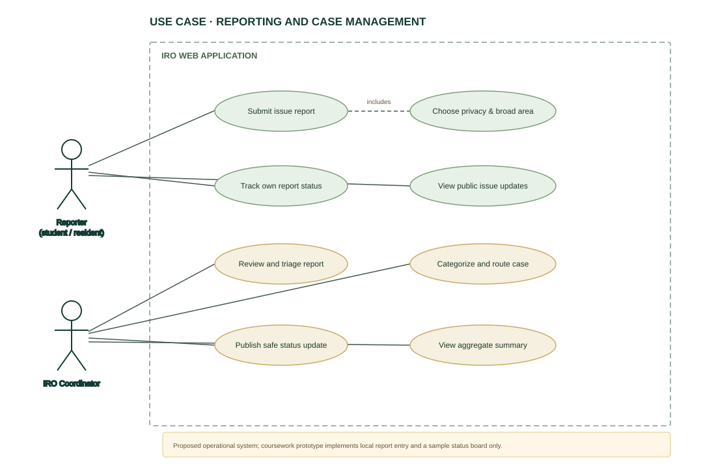
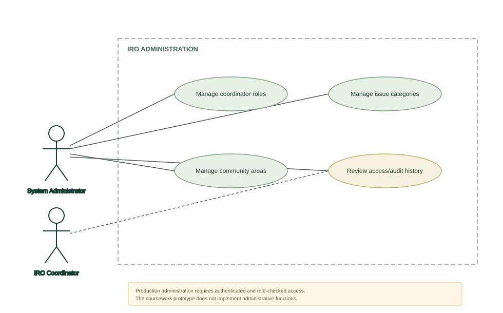
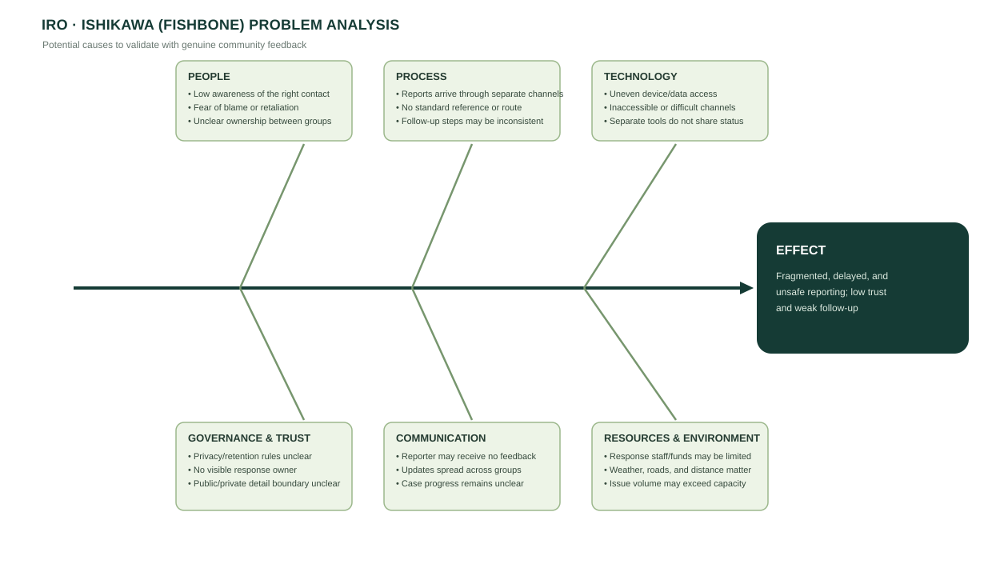

CSC426 WEEKLY DEV – WEEKEND 3
Software requirements, use cases, problem analysis, object listing, and implementation code.
The prototype is local-only. Sample records and the accompanying CSV are fictional and are identified as simulated.
SOFTWARE REQUIREMENTS SPECIFICATION
| Document item | Value |
|---|---|
| Course | CSC426 Weekly Dev – Weekend 3 |
| Student | Opeyemi Raphael-Ogbe |
| Matric number | 220404066 |
| Version | 1.0 |
| Prepared | 19 October 2026 |
| Product type | Coursework web prototype and proposed system |
This SRS specifies IRO, a proposed web-based service for reporting and following non-emergency issues concerning Adekunle Ajasin University students and nearby residents/indigenes, including Akungba, Iwaro, Etioro, and Ayegunle. It describes the actors, data, interfaces, functional requirements, and quality requirements needed for implementation and review.
IRO is intended to give community members one structured route to report an issue, receive a reference, and see safe status information. Coordinators review, categorize, route, and update reports. Public summaries must avoid disclosing the identity of the reporter or sensitive incident details.
The submitted mini interface is a static browser prototype. It demonstrates form validation, a sample issue board, filters, and browser-local storage. It has no server, account system, notifications, or operational coordinator workflow. All initially displayed reports are fictional. The Google Forms questionnaire is a separate needs-assessment artifact, and the included sample response data is simulated.
IRO is not an emergency reporting service, police service, medical service, or substitute for existing official contact channels. The prototype must not be used to submit a real or urgent report.
The intended readers are the course lecturer, student developer, prospective IRO users, and a future implementation team. This document supports coursework review and future design discussion; it is not an authorization to deploy the service.
| Term | Meaning |
|---|---|
| Reporter | A student or community member who submits an issue. |
| Coordinator | An authorized person who reviews and routes incoming reports. |
| Issue report | A structured description of a non-emergency concern and its broad area. |
| Public update | A response/status message cleared for display without private reporter data. |
| Sensitive data | Information that identifies a person, reveals private circumstances, or creates safety/privacy risk. |
| Synthetic response | A fictional record used to demonstrate analysis; it is not community evidence. |
The proposed service has a public reporter interface and a restricted coordinator interface backed by an authenticated server. A future production version would store reports in a protected database and expose only approved status messages and aggregate statistics. The coursework prototype instead runs fully in one browser and uses localStorage for submitted practice entries.
| User class | Goals | Proposed access |
|---|---|---|
| AAUA student | Report campus/shared-area issues and follow a case. | Public submission and status view. |
| Community resident/indigene | Report local infrastructure, sanitation, utility, transport, or service issues. | Public submission and status view. |
| IRO coordinator | Assess safety, classify, route, and update reports. | Authenticated case-management functions. |
| System administrator | Manage coordinator access and approved categories/areas. | Restricted configuration functions. |
The current prototype implements only a local report-entry form and a display board. It does not authenticate any of the proposed roles.
Requirements marked Prototype are implemented in the static demo. Requirements marked Proposed define the operational system and are not implemented in this coursework front end.
The public interface shall use plain language, visible labels, keyboard-operable controls, a mobile layout, confirmation/status feedback, and clear privacy/emergency notices. Sensitive internal notes and reporter identity shall not appear on the public board.
localStorage; no external API.The production system shall use HTTPS for browser/server traffic. Notifications shall contain the reference and a minimal status message, not sensitive incident details. The prototype sends no network requests for report submission.
| Entity | Key attributes | Notes |
|---|---|---|
| IssueReport | reportId, group, category, broadArea, title, description, urgency, status, createdAt, anonymous | Production identity/contact fields, if needed, must be separate and access-restricted. |
| StatusUpdate | updateId, reportId, status, publicMessage, createdAt, coordinatorId | Internal notes and public messages must be separate fields with separate permissions. |
| Category | categoryId, label, active | Controlled by an administrator. |
| Coordinator | coordinatorId, accountId, role, active | Authentication and account lifecycle are proposed, not in the demo. |
| SurveyResponse | responseId, respondentGroup, broadArea, answers | Questionnaire response; no direct identifier requested. Aggregate before sharing. |
The deployed service shall request a broad area rather than an exact address unless the response process proves more precision is necessary. It shall not require a name or contact channel for a general report. Any optional contact detail shall be kept apart from public data and deleted under an approved retention schedule. The SRS cannot set the final retention period until the responsible organization establishes its policy.
The use-case diagram source files are ../diagrams/UseCase-Reporting.drawio and ../diagrams/UseCase-Administration.drawio. The narrative and preconditions are in USE-CASES.md.
The coursework prototype is acceptable when a reviewer can open the static page; select a reporter group, category, broad area, title, description, and urgency; acknowledge the privacy notice; save a report locally; see a confirmation/reference; find the entry on the board; filter the board; and distinguish synthetic sample cards from practice entries. The associated SRS, survey package, Ishikawa diagram, use-case diagrams, object listing, and source listing shall be present in the repository.
Production acceptance additionally requires approved ownership/routing, privacy and retention rules, authentication and access controls, secure server-side storage, tested backup/recovery, accessibility review, and a staffed response procedure. Those requirements are outside this mini prototype.
The demo is single-browser and client-only; its local storage is not a secure case-management database. It does not provide authentication, actual delivery, assignment, moderation, attachments, status subscriptions, email/SMS alerts, audit records, or an operational SLA. Next steps are to collect and analyze real consented feedback, confirm responsible offices and emergency alternatives, obtain privacy/security review, implement a backend and role-based coordinator workflow, and test accessibility and usability with representatives of both user groups.
../google-forms/QUESTIONNAIRE.md, ISHIKAWA-ANALYSIS.md, and USE-CASES.md.USE CASES
| Actor | Description |
|---|---|
| Reporter | AAUA student or community resident/indigene submitting or following an issue. |
| Coordinator | Authorized staff/community representative triaging cases and publishing safe updates. |
| System administrator | Person configuring categories, areas, and coordinator access. |
The reporter and coordinator interactions are shown in UseCase-Reporting; privileged configuration is shown in UseCase-Administration. The .drawio files are editable in diagrams.net (draw.io); SVGs are previews.
Primary actor: Reporter. Goal: Record a non-emergency issue with enough detail for routing.
Preconditions: Reporter can open the public page and understands it is not an emergency channel. Trigger: Reporter selects “Report an issue.”
Main flow:
Alternative/exception flows: Missing fields are highlighted; an invalid entry is not saved. If the report concerns imminent danger, IRO tells the reporter not to rely on this non-emergency service and to use a verified official emergency channel. If a report includes identifying/sensitive details, a production coordinator may restrict it and request a safe redaction; the prototype only displays a warning.
Prototype note: Steps 2–6 work in the browser, but “store” means localStorage in that browser. The report is not transmitted to anyone.
Primary actor: Coordinator.
Preconditions: Coordinator is authenticated and has permission for the case queue. A new report exists.
Main flow: Coordinator reviews the description and broad area, checks scope and duplicate reports, identifies sensitive content or risk, selects an approved category, assigns the responsible unit, records an internal note, and moves the report to Under Review or Assigned. Private notes remain restricted.
Exceptions: Out-of-scope reports are closed with an approved explanation; urgent safety concerns follow an approved escalation procedure; a duplicate is linked to an existing case without removing its own reference.
Primary actor: Coordinator. Supporting actor: Reporter/public visitor.
Preconditions: A report exists and the coordinator has reviewed the proposed update.
Main flow: Coordinator selects a status, writes a factual public update without names or sensitive details, previews the public display, and publishes. IRO records the author and timestamp. A reporter looks up their reference to read the approved status.
Primary actor: Coordinator.
Preconditions: Coordinator is authenticated with summary access; reports exist.
Main flow: Coordinator selects a time range, area, category, or status. IRO returns aggregate counts and suppresses small or sensitive groups where a person could be identified. It does not display private narratives or contact fields in the summary.
Primary actor: System administrator.
Preconditions: Administrator has authenticated with a privileged account.
Main flow: Administrator updates an approved category/area list or coordinator role, confirms the change, and IRO records an audit event. Access is removed promptly when a coordinator leaves the role.
Primary actor: Student/community survey participant.
Preconditions: Participant has opened the separate anonymous Google Form and read its consent statement.
Main flow: Participant chooses whether to consent; if consenting, answers questions about group, broad area, issue types, reporting barriers, privacy concerns, and desired follow-up; optionally gives a non-identifying suggestion; submits the form. The student analyzes only consented genuine responses as community feedback.
Coursework data note: data/synthetic-responses.csv is fictional practice data, not responses from this use case.


ISHIKAWA ANALYSIS
Students and local residents cannot reliably report and follow up on shared campus/community issues through one trusted, safe route. The proposed effect is a problem statement for analysis; it is not a measured finding from a completed community survey.
The editable fishbone diagram is ../diagrams/Ishikawa.drawio; ../diagrams/Ishikawa.svg is its preview.
| Branch | Possible contributing causes |
|---|---|
| People | Residents/students may not know which office owns an issue; reporters may fear blame or retaliation; responsibilities between campus and community actors may be unclear. |
| Process | Reports arrive through unrelated calls, chats, and in-person conversations; there may be no standard minimum information; case references, routing, and close-out steps may be inconsistent. |
| Technology | People may have limited data/device access; digital channels may be inaccessible; separate channels may not share a queue or status history. |
| Governance and trust | Privacy expectations and retention rules may be unknown; no defined owner may be accountable for an update; the boundary between public facts and private details may be unclear. |
| Communication | Feedback may not reach the reporter; notices may be scattered across groups; a reporter may not know whether the issue was received, assigned, or resolved. |
| Resources and environment | Staff/funds to respond may be limited; transport, weather, or infrastructure conditions can complicate investigation; issue volume may exceed the capacity of the responsible team. |
The included file contains 15 fictional rows created to demonstrate analysis. No community survey was sent or answered in creating these rows. Respondent mix: 9 students (60%), 3 Akungba residents (20%), and 1 each from Iwaro, Etioro, and Ayegunle (6.7% each). The small sample is illustrative only and is not representative.
Issue types were multi-select; each percentage below uses 15 simulated respondents as the denominator, so totals can exceed 100%:
| Simulated issue type | Count | Percent |
|---|---|---|
| Sanitation | 10 | 66.7% |
| Roads | 8 | 53.3% |
| Safety | 7 | 46.7% |
| Utilities | 6 | 40.0% |
| Facilities | 5 | 33.3% |
| Communication | 4 | 26.7% |
| Transport | 4 | 26.7% |
Reporting barriers were also multi-select (denominator 15):
| Simulated barrier | Count | Percent |
|---|---|---|
| Do not know the right contact | 8 | 53.3% |
| Expect no follow-up | 6 | 40.0% |
| Privacy concern | 6 | 40.0% |
| Process takes time | 4 | 26.7% |
| Retaliation concern | 2 | 13.3% |
| Unreliable internet | 1 | 6.7% |
Six fictional respondents selected weekly issue frequency, six selected monthly, and three selected rarely. These are properties of the simulated CSV only, not evidence about the community.
The prototype uses broad area choices, anonymous-by-default reporting, a privacy reminder, a non-emergency notice, required structured fields, a local reference, and a status board that omits contact details. A production version would also need authenticated coordinator access, a reviewed privacy/retention policy, a documented routing owner, and an agreed update target. A genuine needs assessment with consent and broader participation is required before treating these priorities as community findings.

OBJECT LISTING
This list distinguishes objects implemented in the static prototype from objects required by a future multi-user system.
| Object | Type | Main attributes/responsibility | State / relationships |
|---|---|---|---|
IROPage | Browser page | Renders the landing page, privacy notice, report form, and issue board. | Contains form and board sections. |
IssueReport | Data object | id, category, area, title, description, status, date, urgency, reporterGroup, anonymous, sample. | Created by form or supplied as fictional sample data. |
ReportForm | UI component | Captures group, category, area, title, description, urgency, anonymity, and consent. | Validates and creates an IssueReport. |
LocalReportStore | Browser storage adapter | Reads/writes practice reports under key iro-demo-reports-v1. | Uses browser localStorage; one browser only, not protected server storage. |
IssueBoard | UI component | Renders safe report fields and counts; filters all, in-progress, and resolved entries. | Reads IssueReport objects; does not expose reporter contact details. |
StatusLabel | UI value | Displays Received, In progress, or Resolved on prototype cards. | In production, status history belongs to StatusUpdate. |
SurveyResponse | Coursework data record | Synthetic CSV row with pseudonymous sample ID, respondent group, broad area, multi-select issue types/barriers, frequency, and expected update. | All rows carry Simulated; never evidence of actual participants. |
Coordinator | Proposed domain object | Authorized user who reviews, classifies, assigns, and updates a case. | Requires authenticated account/role; absent in prototype. |
StatusUpdate | Proposed domain object | updateId, report reference, status, public message, timestamp, coordinator reference. | Linked to IssueReport; public and internal text must have separate access rules. |
Category | Proposed domain object | Approved category ID, label, active flag. | Managed by an administrator and referenced by a report. |
IRO API | Proposed service | Validates server-side requests, stores reports, returns references, and enforces permissions. | Not present in the static prototype. |
ReportDatabase | Proposed persistence object | Stores report and status records under a retention and access policy. | Not present in the static prototype. |
app/app.js defines the fictional sample report array and creates report records from FormData. It reads/writes the local store, escapes text before rendering report cards, computes counts, and filters by status. It deliberately does not send report data over the network.
CODE LISTING
IRO — ISSUES REPORTING OUTLET
Student: Opeyemi Raphael-Ogbe | Matric number: 220404066
Combined source listing. Generated from the project files.
========================================================================================
FILE: app/index.html
========================================================================================
<!doctype html>
<html lang="en">
<head>
<meta charset="utf-8">
<meta name="viewport" content="width=device-width, initial-scale=1">
<meta name="theme-color" content="#153b35">
<meta name="description" content="IRO is a coursework prototype for reporting local student and community issues around AAUA.">
<title>IRO — Issues Reporting Outlet</title>
<link rel="stylesheet" href="styles.css">
<script src="app.js" defer></script>
</head>
<body>
<a class="skip-link" href="#main">Skip to main content</a>
<header class="site-header">
<a class="brand" href="#top" aria-label="IRO home">
<span class="brand-mark" aria-hidden="true">i</span>
<span><strong>iro</strong><small>Issues Reporting Outlet</small></span>
</a>
<nav class="primary-nav" aria-label="Main navigation">
<a href="#how-it-works">How it works</a>
<a href="#reports">Community issues</a>
<a class="nav-cta" href="#report">Report an issue <span aria-hidden="true">↗</span></a>
</nav>
</header>
<main id="main">
<section class="hero" id="top" aria-labelledby="hero-title">
<div class="hero-copy">
<p class="eyebrow"><span class="live-dot"></span> AAUA · Akungba-Akoko · nearby communities</p>
<h1 id="hero-title">A better route from <em>issue</em> to action.</h1>
<p class="hero-intro">A simple place for students and residents to raise local concerns, see what has been reported, and understand what happens next.</p>
<a class="button button-light" href="#report">Share an issue <span aria-hidden="true">↓</span></a>
<div class="hero-note"><span class="note-icon" aria-hidden="true">✳</span><span>Use this demo for coursework only. It does not contact an authority or provide emergency help.</span></div>
</div>
<div class="hero-art" aria-hidden="true">
<div class="orbit orbit-one"></div><div class="orbit orbit-two"></div>
<div class="art-card card-main"><span class="art-symbol">↗</span><span class="art-label">A concern, heard.</span><strong>A clear next step.</strong></div>
<div class="art-card card-small"><span class="status-dot"></span><span>Update received</span><b>Case #IRO-024</b></div>
<div class="art-spark">✳</div><div class="art-line"></div>
</div>
<div class="hero-bottom"><span>BUILT FOR THE PEOPLE WHO SHARE THIS PLACE</span><span>STUDENTS <i>·</i> RESIDENTS <i>·</i> COMMUNITY TEAMS</span></div>
</section>
<section class="trust-strip" aria-label="Prototype privacy notes">
<div><span class="strip-icon">◎</span><span><strong>Local-only prototype</strong><small>Entries are not sent to a server.</small></span></div>
<div><span class="strip-icon">↗</span><span><strong>Follow the progress</strong><small>See example reports and statuses.</small></span></div>
<div><span class="strip-icon">⌁</span><span><strong>Made for everyone here</strong><small>Students and local indigenes.</small></span></div>
<span class="demo-pill">COURSEWORK PROTOTYPE</span>
</section>
<section class="work-area" id="how-it-works">
<div class="section-heading">
<div><p class="eyebrow eyebrow-dark">A small step can start a response</p><h2>Make the issue easier to act on.</h2></div>
<p>IRO organizes a report with enough context to route it, while reminding people not to post sensitive personal information.</p>
</div>
<div class="steps-grid">
<article class="step-card"><span class="step-number">01</span><div class="step-icon icon-report">✎</div><h3>Describe the issue</h3><p>Choose a category and give a short, practical description of what needs attention.</p></article>
<article class="step-card"><span class="step-number">02</span><div class="step-icon icon-route">⌖</div><h3>Share useful context</h3><p>Select a broad area and urgency. Keep names, exact addresses, and private details out.</p></article>
<article class="step-card"><span class="step-number">03</span><div class="step-icon icon-update">↗</div><h3>Follow the status</h3><p>In a full system, a coordinator would review reports and publish safe progress updates.</p></article>
</div>
</section>
<section class="report-section" id="report">
<div class="report-intro">
<p class="eyebrow eyebrow-dark">YOUR VOICE BELONGS HERE</p>
<h2>What needs attention?</h2>
<p>Share a clear, non-sensitive description. In this prototype, the entry is saved only in this browser.</p>
<div class="privacy-card"><span aria-hidden="true">⌑</span><div><strong>Protect yourself and others</strong><p>Don't include names, phone numbers, exact home addresses, medical details, or allegations that identify a person. This demo is not monitored.</p></div></div>
<div class="scope-list"><span>AAUA Students</span><span>Akungba</span><span>Iwaro</span><span>Etioro</span><span>Ayegunle</span></div>
</div>
<form class="report-form" id="issueForm">
<div class="form-head"><div><span class="form-step">NEW REPORT <span>·</span> 01</span><h3>Tell us what is happening</h3></div><span class="lock-mark" aria-label="Local demo">⌑</span></div>
<div class="field-row">
<label class="field">I am a
<select name="reporterGroup" required>
<option value="">Choose one</option><option>AAUA student</option><option>Akungba indigene</option><option>Iwaro indigene</option><option>Etioro indigene</option><option>Ayegunle indigene</option><option>Other community member</option>
</select>
</label>
<label class="field">Issue category
<select name="category" required>
<option value="">Choose one</option><option>Roads & transport</option><option>Water & electricity</option><option>Sanitation & waste</option><option>Safety & security</option><option>Facilities & maintenance</option><option>Student services</option><option>Community concern</option><option>Other</option>
</select>
</label>
</div>
<label class="field">Where is it happening?
<select name="area" required>
<option value="">Choose a broad area</option><option>AAUA campus</option><option>Akungba-Akoko</option><option>Iwaro</option><option>Etioro</option><option>Ayegunle</option><option>Other nearby area</option>
</select>
<span class="field-hint">Please don't enter an exact home address.</span>
</label>
<label class="field">Short title
<input name="title" maxlength="70" placeholder="e.g. Waste collection delay near campus" required>
</label>
<label class="field">Description
<textarea name="description" rows="4" maxlength="500" placeholder="What is happening, and what would help? Avoid identifying details." required></textarea>
<span class="field-hint">Up to 500 characters. Keep it factual and respectful.</span>
</label>
<fieldset class="urgency-field"><legend>How urgent is it?</legend>
<div class="urgency-options">
<label><input type="radio" name="urgency" value="Routine" checked><span><b>Routine</b><small>Needs attention</small></span></label>
<label><input type="radio" name="urgency" value="Soon"><span><b>Soon</b><small>May worsen</small></span></label>
<label><input type="radio" name="urgency" value="Urgent"><span><b>Urgent</b><small>Prompt action</small></span></label>
</div>
</fieldset>
<label class="check-row"><input id="anonymous" type="checkbox" checked><span><strong>Keep this report anonymous</strong><small>No contact detail is included with a local demo report.</small></span></label>
<label class="field contact-field" id="contactWrap" hidden>Optional contact for follow-up
<input name="contact" type="text" maxlength="80" autocomplete="off" placeholder="Only if you choose to share it">
<span class="field-hint">The prototype ignores this field. Do not enter real contact details.</span>
</label>
<label class="check-row consent-row"><input name="consent" type="checkbox" required><span><strong>I have left out private identifying information.</strong><small>This is a coursework demo and no response team is monitoring it.</small></span></label>
<button class="button button-dark submit-button" type="submit">Save report in this browser <span aria-hidden="true">↗</span></button>
<p class="form-feedback" id="formFeedback" role="status" aria-live="polite"></p>
</form>
</section>
<section class="issues-section" id="reports">
<div class="issues-heading">
<div><p class="eyebrow eyebrow-dark">A community view</p><h2>Issues, in the open.</h2><p>These fictional examples show how a full service might communicate progress without exposing reporters.</p></div>
<div class="issue-filters" role="group" aria-label="Filter example issues">
<button class="filter-button active" data-filter="all" type="button">All <span id="countAll">0</span></button>
<button class="filter-button" data-filter="open" type="button">In progress <span id="countOpen">0</span></button>
<button class="filter-button" data-filter="resolved" type="button">Resolved <span id="countResolved">0</span></button>
</div>
</div>
<div class="demo-alert"><span>i</span><p><strong>Sample board.</strong> Initial cards are invented examples; reports submitted in this browser are local practice entries only.</p></div>
<div class="issue-list" id="issueList" aria-live="polite"></div>
</section>
<section class="closing-cta">
<div><p class="eyebrow">BETTER INFORMATION. BETTER FOLLOW-UP.</p><h2>Start with one clear report.</h2></div>
<a class="button button-light" href="#report">Report an issue <span aria-hidden="true">↗</span></a>
<span class="closing-mark" aria-hidden="true">i</span>
</section>
</main>
<footer class="site-footer"><a class="brand footer-brand" href="#top"><span class="brand-mark" aria-hidden="true">i</span><span><strong>iro</strong><small>Issues Reporting Outlet</small></span></a><p>CSC426 · Coursework prototype · Opeyemi Raphael-Ogbe · 220404066</p><a href="../README.md">Project documentation <span aria-hidden="true">↗</span></a></footer>
</body>
</html>
========================================================================================
FILE: app/styles.css
========================================================================================
@import url('https://fonts.googleapis.com/css2?family=DM+Sans:wght@400;500;600;700&family=Manrope:wght@400;500;600;700;800&display=swap');
:root{--pine:#153b35;--pine-dark:#0d2b27;--ink:#17231f;--muted:#68736f;--paper:#f6f7f2;--white:#fff;--lime:#d8ef9d;--line:#e4e8df;--mint:#e7f0e9;--orange:#e99a5b;--shadow:0 20px 60px rgba(18,49,41,.09);font-family:'DM Sans',sans-serif;color:var(--ink);scroll-behavior:smooth}
*{box-sizing:border-box}body{margin:0;background:var(--paper)}a{color:inherit;text-decoration:none}button,input,select,textarea{font:inherit}button,a,input,select,textarea{outline-color:#a5cf66}button{cursor:pointer}.skip-link{position:absolute;left:12px;top:-50px;background:#fff;padding:12px;z-index:8}.skip-link:focus{top:12px}.site-header{height:88px;background:#fff;display:flex;align-items:center;justify-content:space-between;padding:0 max(calc((100% - 1200px)/2),5.5%);position:relative;z-index:2}.brand{display:flex;gap:11px;align-items:center}.brand-mark{width:36px;height:36px;border-radius:12px;background:var(--pine);color:var(--lime);font:800 24px Manrope,sans-serif;display:grid;place-items:center}.brand strong{display:block;font:800 23px Manrope,sans-serif;letter-spacing:-1.8px;line-height:1}.brand small{display:block;font-size:9px;color:#74807b;letter-spacing:.05em;margin-top:4px}.primary-nav{display:flex;align-items:center;gap:38px;font-size:12px;font-weight:600;color:#4d5954}.primary-nav a:hover{color:var(--pine)}.primary-nav .nav-cta{padding:13px 18px;border-radius:8px;background:var(--pine);color:#fff}.nav-cta span{color:var(--lime);margin-left:13px}.hero{min-height:514px;background:var(--pine);color:#fff;padding:72px max(calc((100% - 1200px)/2),5.5%) 0;position:relative;overflow:hidden;display:grid;grid-template-columns:1.08fr .92fr;align-items:center}.hero:before{content:"";position:absolute;width:520px;height:520px;border:1px solid rgba(221,241,189,.08);border-radius:50%;right:13%;top:-200px}.hero-copy{max-width:560px;position:relative;z-index:1;padding-bottom:50px}.eyebrow{font-size:9px;font-weight:700;letter-spacing:.16em;text-transform:uppercase;color:#aac7a9;margin:0 0 20px}.live-dot{display:inline-block;width:7px;height:7px;background:var(--lime);border-radius:50%;margin-right:7px;box-shadow:0 0 0 4px rgba(216,239,157,.12)}h1,h2,h3,p{margin-top:0}.hero h1{font:600 clamp(40px,5.2vw,64px)/1.06 Manrope,sans-serif;letter-spacing:-3.3px;max-width:570px;margin:0 0 20px}.hero h1 em{font-style:normal;color:var(--lime)}.hero-intro{font-size:14px;line-height:1.8;color:#d1ded7;max-width:470px;margin-bottom:27px}.button{display:inline-flex;align-items:center;justify-content:center;gap:26px;border:0;border-radius:7px;padding:14px 18px;font-size:12px;font-weight:700;transition:transform .18s,background .18s}.button:hover{transform:translateY(-2px)}.button-light{background:var(--lime);color:var(--pine-dark)}.hero-note{display:flex;align-items:flex-start;gap:9px;max-width:400px;margin-top:24px;color:#adbfba;font-size:10px;line-height:1.6}.note-icon{color:var(--lime);font-size:17px}.hero-art{height:340px;position:relative;display:grid;place-items:center}.orbit{position:absolute;border:1px solid rgba(217,238,201,.14);border-radius:50%;transform:rotate(-28deg)}.orbit-one{width:360px;height:230px}.orbit-two{width:440px;height:285px}.art-card{position:absolute;z-index:1;box-shadow:0 22px 45px rgba(5,24,18,.22)}.card-main{width:220px;height:180px;background:#edf3df;border-radius:14px;color:var(--pine);padding:25px;right:18%;top:52px;transform:rotate(5deg);display:flex;flex-direction:column;justify-content:flex-end}.card-main:before{content:"";position:absolute;top:18px;left:18px;width:74px;height:74px;border-radius:50%;background:#d6e7bd}.art-symbol{position:absolute;top:25px;right:29px;font:500 26px Manrope;color:#52765b}.art-label{font-size:10px;color:#718076}.card-main strong{font:700 21px Manrope;letter-spacing:-.8px;margin-top:5px}.card-small{width:175px;border-radius:10px;background:#fff;color:var(--ink);padding:14px;left:6%;bottom:55px;display:grid;grid-template-columns:13px 1fr;align-items:center;font-size:9px}.card-small b{grid-column:2;font-size:10px;margin-top:5px}.status-dot{width:8px;height:8px;border-radius:50%;background:#95bf6a;grid-row:span 2}.art-spark{position:absolute;color:var(--lime);font-size:31px;right:9%;bottom:44px}.art-line{position:absolute;width:1px;height:90px;background:rgba(221,241,189,.32);transform:rotate(38deg);right:21%;bottom:45px}.hero-bottom{grid-column:1/-1;display:flex;justify-content:space-between;padding:18px 0 17px;border-top:1px solid rgba(255,255,255,.16);font-size:8px;letter-spacing:.14em;color:#abc0b7}.hero-bottom i{font-style:normal;color:var(--lime);padding:0 6px}.trust-strip{max-width:1200px;margin:0 auto;padding:24px 0;display:flex;align-items:center;justify-content:space-between;gap:18px}.trust-strip>div{display:flex;align-items:center;gap:11px}.trust-strip strong,.trust-strip small{display:block}.trust-strip strong{font-size:10px}.trust-strip small{font-size:9px;color:#79827f;margin-top:4px}.strip-icon{width:32px;height:32px;border:1px solid #dfe6dd;background:#fff;border-radius:10px;display:grid;place-items:center;color:var(--pine);font-size:17px}.demo-pill{background:#e9eee5;color:#60725e;padding:8px 10px;border-radius:4px;font-size:8px;letter-spacing:.1em;font-weight:700}.work-area{background:#fff;padding:73px max(calc((100% - 1200px)/2),5.5%) 82px}.section-heading,.issues-heading{display:flex;justify-content:space-between;align-items:end;gap:40px}.eyebrow-dark{color:#77936d;margin-bottom:12px}.section-heading h2,.report-intro h2,.issues-heading h2{font:700 clamp(29px,3.3vw,40px)/1.15 Manrope,sans-serif;letter-spacing:-1.8px;margin-bottom:0}.section-heading>p{max-width:350px;color:var(--muted);font-size:12px;line-height:1.7;margin-bottom:3px}.steps-grid{display:grid;grid-template-columns:repeat(3,1fr);gap:16px;margin-top:34px}.step-card{padding:24px;border:1px solid var(--line);border-radius:12px;position:relative;min-height:185px}.step-number{position:absolute;right:20px;top:20px;font-size:9px;letter-spacing:.1em;color:#8f9b95}.step-icon{width:38px;height:38px;border-radius:11px;display:grid;place-items:center;font-size:19px;margin-bottom:19px}.icon-report{background:#f6eddc;color:#b77b2e}.icon-route{background:#e6f1e1;color:#577a47}.icon-update{background:#e8edf6;color:#5a6a9a}.step-card h3{font:700 14px Manrope;margin:0 0 9px}.step-card p{font-size:10px;line-height:1.7;color:var(--muted);max-width:260px;margin-bottom:0}.report-section{background:#edf1e9;display:grid;grid-template-columns:.82fr 1.18fr;gap:80px;padding:88px max(calc((100% - 1200px)/2),5.5%)}.report-intro{padding-top:15px}.report-intro h2{max-width:350px;margin-bottom:17px}.report-intro>p:not(.eyebrow){font-size:12px;color:var(--muted);line-height:1.8;max-width:370px}.privacy-card{display:flex;gap:13px;padding:15px;background:#fff;border:1px solid #e2e8df;border-radius:10px;margin-top:28px;max-width:390px}.privacy-card>span{font-size:20px;color:#68825a}.privacy-card strong{font-size:10px}.privacy-card p{font-size:9px;line-height:1.6;color:#768079;margin:5px 0 0}.scope-list{display:flex;flex-wrap:wrap;gap:7px;margin-top:23px;max-width:370px}.scope-list span{font-size:8px;border:1px solid #d6dfd3;border-radius:20px;padding:7px 10px;color:#637364}.report-form{background:#fff;border-radius:14px;padding:27px 30px;box-shadow:var(--shadow)}.form-head{display:flex;justify-content:space-between;align-items:start;margin-bottom:23px}.form-step{font-size:8px;font-weight:700;letter-spacing:.14em;color:#86928c}.form-step span{color:#b6c2b2;margin:0 5px}.form-head h3{font:700 20px Manrope;letter-spacing:-.6px;margin:7px 0 0}.lock-mark{color:#789177;border:1px solid #e2e9e1;width:31px;height:31px;border-radius:9px;display:grid;place-items:center}.field{display:block;font-size:10px;font-weight:700;color:#36433d;margin-bottom:15px}.field input,.field select,.field textarea{display:block;width:100%;border:1px solid #dfe5de;border-radius:6px;background:#fff;color:#26312c;padding:11px 12px;margin-top:7px;font-size:10px;font-weight:400}.field select:invalid,.field input::placeholder,.field textarea::placeholder{color:#9ca59f}.field select{appearance:auto}.field textarea{resize:vertical;line-height:1.55}.field-row{display:grid;grid-template-columns:1fr 1fr;gap:13px}.field-hint{display:block;color:#8b9690;font-size:8px;font-weight:400;margin:5px 0 0}.urgency-field{border:0;padding:0;margin:1px 0 17px}.urgency-field legend{font-size:10px;font-weight:700;margin-bottom:9px}.urgency-options{display:grid;grid-template-columns:repeat(3,1fr);gap:8px}.urgency-options label{position:relative}.urgency-options input{position:absolute;opacity:0}.urgency-options span{display:block;border:1px solid #e1e7df;border-radius:6px;padding:8px 10px}.urgency-options input:checked+span{border-color:#89a874;background:#f4f8ef}.urgency-options input:focus-visible+span{outline:2px solid #a5cf66}.urgency-options b,.urgency-options small{display:block}.urgency-options b{font-size:9px}.urgency-options small{font-size:8px;color:#838e87;margin-top:3px}.check-row{display:flex;gap:10px;align-items:start;padding:12px 0;border-top:1px solid #edf0ec;cursor:pointer}.check-row input{accent-color:var(--pine);margin:2px 0 0}.check-row strong,.check-row small{display:block}.check-row strong{font-size:9px}.check-row small{font-size:8px;color:#838e87;margin-top:4px;line-height:1.45}.contact-field[hidden]{display:none}.submit-button{width:100%;margin-top:5px}.button-dark{background:var(--pine);color:#fff}.button-dark span{color:var(--lime)}.form-feedback{min-height:15px;margin:9px 0 0;font-size:9px;color:#406842}.issues-section{padding:80px max(calc((100% - 1200px)/2),5.5%) 86px;background:var(--paper)}.issues-heading{align-items:end}.issues-heading>div:first-child>p:not(.eyebrow){font-size:10px;color:var(--muted);margin:10px 0 0;max-width:470px;line-height:1.6}.issue-filters{display:flex;border:1px solid #e0e6dd;background:#fff;border-radius:7px;padding:4px;gap:2px}.filter-button{border:0;background:transparent;padding:8px 10px;border-radius:5px;color:#66716a;font-size:8px;font-weight:600}.filter-button span{color:#9ca79f;margin-left:4px}.filter-button.active{background:var(--pine);color:#fff}.filter-button.active span{color:var(--lime)}.demo-alert{display:flex;align-items:center;gap:10px;background:#fff8e9;border:1px solid #f2e6c7;border-radius:7px;padding:10px 13px;margin:23px 0 13px}.demo-alert>span{width:17px;height:17px;border-radius:50%;background:#f2e1b7;color:#826627;display:grid;place-items:center;font:bold 10px Georgia}.demo-alert p{font-size:9px;color:#76694a;margin:0}.demo-alert strong{color:#544a34}.issue-list{display:grid;grid-template-columns:repeat(2,1fr);gap:12px}.issue-card{background:#fff;border:1px solid var(--line);border-radius:9px;padding:17px;display:grid;grid-template-columns:1fr auto;gap:10px}.issue-meta{display:flex;align-items:center;gap:7px;font-size:8px;color:#89948d}.issue-category{padding:5px 7px;background:#eef3e9;border-radius:3px;color:#56734e;font-weight:700}.issue-card h3{font:700 13px Manrope;margin:11px 0 5px}.issue-card p{font-size:9px;color:#717c75;line-height:1.6;margin:0;max-width:420px}.issue-status{align-self:start;font-size:8px;padding:6px 8px;border-radius:12px;background:#f7eddb;color:#9b6d29;white-space:nowrap}.issue-status.resolved{background:#e7f1e5;color:#527c51}.issue-foot{grid-column:1/-1;border-top:1px solid #eef1ec;padding-top:10px;display:flex;justify-content:space-between;font-size:8px;color:#89948d}.issue-empty{grid-column:1/-1;text-align:center;background:#fff;border-radius:8px;padding:25px;color:#78837c;font-size:11px}.closing-cta{background:var(--pine);color:#fff;padding:45px max(calc((100% - 1200px)/2),5.5%);display:flex;align-items:center;justify-content:space-between;position:relative;overflow:hidden}.closing-cta .eyebrow{margin-bottom:9px}.closing-cta h2{font:700 26px Manrope;letter-spacing:-1px;margin:0}.closing-mark{position:absolute;right:28%;top:-70px;font:800 240px Manrope;color:rgba(255,255,255,.045)}.closing-cta .button{position:relative;z-index:1}.site-footer{max-width:1200px;padding:24px 0;margin:0 auto;display:flex;align-items:center;justify-content:space-between}.site-footer p,.site-footer>a:last-child{font-size:8px;color:#7b8580;margin:0}.site-footer>a:last-child span{color:var(--pine);margin-left:5px}.footer-brand .brand-mark{width:30px;height:30px;border-radius:9px;font-size:20px}.footer-brand strong{font-size:19px}.footer-brand small{font-size:8px}
@media(max-width:900px){.trust-strip,.site-footer{margin-left:5.5%;margin-right:5.5%}.report-section{gap:35px}.hero{grid-template-columns:1fr .75fr}.hero-art{transform:scale(.88);transform-origin:center}.primary-nav{gap:20px}}
@media(max-width:650px){.site-header{height:72px;padding:0 5%}.primary-nav>a:not(.nav-cta){display:none}.primary-nav .nav-cta{padding:11px 12px;font-size:10px}.hero{display:block;padding:58px 6% 0;min-height:auto}.hero-copy{padding-bottom:15px}.hero h1{font-size:45px;letter-spacing:-2.5px}.hero-intro{font-size:12px}.hero-art{height:240px;transform:scale(.8);margin-top:-4px}.card-main{right:16%;top:25px}.card-small{left:4%;bottom:18px}.hero-bottom{font-size:7px;gap:12px}.hero-bottom span:last-child{text-align:right}.trust-strip{padding:20px 0;display:grid;grid-template-columns:1fr 1fr}.trust-strip>div{gap:8px}.trust-strip small{font-size:8px}.demo-pill{justify-self:start}.work-area,.issues-section{padding:58px 6%}.section-heading,.issues-heading{display:block}.section-heading>p{margin-top:13px}.steps-grid{grid-template-columns:1fr;gap:9px;margin-top:23px}.step-card{min-height:auto;padding:18px}.step-icon{margin-bottom:13px}.report-section{display:block;padding:57px 6%}.report-intro{padding:0;margin-bottom:25px}.report-intro h2{font-size:34px}.report-form{padding:21px 18px}.field-row{grid-template-columns:1fr;gap:0}.issue-filters{margin-top:20px;display:inline-flex}.issue-list{grid-template-columns:1fr}.closing-cta{padding:35px 6%;gap:18px;align-items:start;flex-direction:column}.closing-cta h2{font-size:23px}.closing-mark{right:9%;top:-46px;font-size:180px}.site-footer{margin:0;padding:22px 6%;align-items:flex-start;gap:12px;flex-wrap:wrap}.site-footer p{order:3;width:100%}}
@media(prefers-reduced-motion:reduce){*,*::before,*::after{scroll-behavior:auto!important;transition:none!important}}
========================================================================================
FILE: app/app.js
========================================================================================
(() => {
const STORAGE_KEY = 'iro-demo-reports-v1';
const sampleReports = [
{id:'IRO-024',category:'Sanitation',area:'Akungba-Akoko',title:'Waste collection delay near campus',description:'Several shared collection points appear full. A clear collection update would help residents plan.',status:'In progress',date:'18 Oct 2026',urgency:'Soon',sample:true},
{id:'IRO-023',category:'Roads & transport',area:'Iwaro',title:'Road surface needs attention',description:'A section of the route is difficult to use after rainfall. Please review drainage and repairs.',status:'Received',date:'16 Oct 2026',urgency:'Routine',sample:true},
{id:'IRO-021',category:'Water & electricity',area:'AAUA campus',title:'Intermittent water supply',description:'Some shared facilities have had irregular water access. A service notice would be useful.',status:'In progress',date:'13 Oct 2026',urgency:'Soon',sample:true},
{id:'IRO-018',category:'Facilities',area:'Etioro',title:'Street lighting repair completed',description:'A lighting fault was checked and the example report is marked resolved.',status:'Resolved',date:'08 Oct 2026',urgency:'Routine',sample:true}
];
const issueList = document.getElementById('issueList');
const form = document.getElementById('issueForm');
const feedback = document.getElementById('formFeedback');
let activeFilter = 'all';
const escapeHTML = (value) => String(value).replace(/[&<>"']/g, (character) => ({'&':'&','<':'<','>':'>','"':'"',"'":'''}[character]));
const getReports = () => {
try {
const saved = JSON.parse(localStorage.getItem(STORAGE_KEY));
return Array.isArray(saved) ? [...saved, ...sampleReports] : sampleReports;
} catch (_) { return sampleReports; }
};
const setReports = (reports) => {
try { localStorage.setItem(STORAGE_KEY, JSON.stringify(reports.filter((report) => !report.sample))); }
catch (_) { feedback.textContent = 'This browser could not save the demo entry. You can still review the example board.'; }
};
function renderReports() {
const reports = getReports();
const openCount = reports.filter((item) => item.status !== 'Resolved').length;
const resolvedCount = reports.length - openCount;
document.getElementById('countAll').textContent = reports.length;
document.getElementById('countOpen').textContent = openCount;
document.getElementById('countResolved').textContent = resolvedCount;
const visible = reports.filter((item) => activeFilter === 'all' || (activeFilter === 'resolved' ? item.status === 'Resolved' : item.status !== 'Resolved'));
issueList.innerHTML = visible.length ? visible.map((item) => `
<article class="issue-card">
<div><div class="issue-meta"><span class="issue-category">${escapeHTML(item.category)}</span><span>·</span><span>${escapeHTML(item.area)}</span></div>
<h3>${escapeHTML(item.title)}</h3><p>${escapeHTML(item.description)}</p></div>
<span class="issue-status ${item.status === 'Resolved' ? 'resolved' : ''}">${escapeHTML(item.status)}</span>
<div class="issue-foot"><span>${escapeHTML(item.id)} ${item.sample ? '· sample' : '· local demo'}</span><span>${escapeHTML(item.date)}</span></div>
</article>`).join('') : '<p class="issue-empty">No reports match this filter yet.</p>';
}
document.querySelectorAll('[data-filter]').forEach((button) => button.addEventListener('click', () => {
activeFilter = button.dataset.filter;
document.querySelectorAll('[data-filter]').forEach((item) => item.classList.toggle('active', item === button));
renderReports();
}));
document.getElementById('anonymous').addEventListener('change', (event) => {
document.getElementById('contactWrap').hidden = event.target.checked;
});
form.addEventListener('submit', (event) => {
event.preventDefault();
if (!form.reportValidity()) return;
const values = new FormData(form);
const reports = getReports().filter((report) => !report.sample);
const nextNumber = String(25 + reports.length).padStart(3, '0');
reports.unshift({
id:`IRO-${nextNumber}`,
category:values.get('category'),
area:values.get('area'),
title:values.get('title'),
description:values.get('description'),
status:'Received',
date:new Intl.DateTimeFormat('en-GB',{day:'2-digit',month:'short',year:'numeric'}).format(new Date()),
urgency:values.get('urgency'),
reporterGroup:values.get('reporterGroup'),
anonymous:document.getElementById('anonymous').checked
});
setReports(reports);
feedback.textContent = `Saved locally as ${reports[0].id}. This entry has not been sent to anyone.`;
form.reset();
document.getElementById('contactWrap').hidden = true;
activeFilter = 'all';
document.querySelectorAll('[data-filter]').forEach((item) => item.classList.toggle('active', item.dataset.filter === 'all'));
renderReports();
document.getElementById('reports').scrollIntoView({behavior:'smooth',block:'start'});
});
renderReports();
})();
========================================================================================
FILE: google-forms/CreateIROForm.gs
========================================================================================
/**
* Creates the IRO anonymous needs-assessment questionnaire in the signed-in
* Google account. Run createIROSurvey once, then copy the URLs from the log.
* The script creates the form only; it does not submit or invent responses.
*/
function createIROSurvey() {
const form = FormApp.create('IRO (Issues Reporting Outlet) — Community Needs Survey', false);
form
.setDescription(
'This short questionnaire gathers views from AAUA students and residents of Akungba, Iwaro, Etioro, Ayegunle, and nearby communities. It informs a CSC426 coursework prototype. Participation is voluntary. Do not include names, phone numbers, exact addresses, health details, allegations about named people, or other identifying information. The form does not collect email addresses. Responses are for coursework analysis and are not an emergency or complaint-handling service.'
)
.setCollectEmail(false)
.setAllowResponseEdits(false)
.setProgressBar(true)
.setConfirmationMessage('Thank you. Your anonymous feedback has been recorded for the IRO coursework needs assessment.');
addChoice(form, 'Consent', 'I understand the purpose above and choose to provide anonymous feedback.', [
'Yes, I consent to take part',
'No, I do not consent'
], true);
addChoice(form, 'Respondent group', 'Which group best describes you?', [
'AAUA student', 'Akungba indigene/resident', 'Iwaro indigene/resident',
'Etioro indigene/resident', 'Ayegunle indigene/resident', 'Other nearby community member', 'Prefer not to say'
], true, true);
addChoice(form, 'Main area', 'Which broad area are you answering about?', [
'AAUA campus', 'Akungba-Akoko', 'Iwaro', 'Etioro', 'Ayegunle', 'Other nearby area', 'Prefer not to say'
], true, true);
addChoice(form, 'Recent issues', 'In the past six months, have you experienced or witnessed an unresolved community or campus issue?', [
'Yes', 'No', 'Not sure', 'Prefer not to say'
], true);
addChecks(form, 'Issue types', 'Which issues have you experienced or witnessed? Select all that apply.', [
'Roads and transport', 'Water and electricity', 'Sanitation and waste',
'Safety and security', 'Facilities and maintenance', 'Student services',
'Communication or delayed updates', 'Other', 'Prefer not to say'
], false);
addChoice(form, 'Issue frequency', 'How often do issues that need attention affect your area?', [
'Weekly or more often', 'About monthly', 'A few times a year', 'Rarely', 'Not sure', 'Prefer not to say'
], true);
addChecks(form, 'Reporting barriers', 'What makes it difficult to report an issue or get follow-up? Select all that apply.', [
'I do not know the right contact or channel', 'I am concerned about privacy',
'I am concerned about retaliation', 'I expect no response or update',
'The process takes too much time', 'I do not have reliable internet/access',
'I have not had a reason to report', 'Other', 'Prefer not to say'
], false);
addChoice(form, 'Current reporting channel', 'How would you most likely raise an issue today?', [
'Tell a representative or community leader', 'Contact a university/community office',
'Use a phone call or message', 'Post in a group or on social media',
'I would not report it', 'Other', 'Prefer not to say'
], true, true);
addChoice(form, 'Privacy confidence', 'How confident would you feel using a reporting service that does not require your name?', [
'Very confident', 'Somewhat confident', 'Neither confident nor concerned',
'Somewhat concerned', 'Very concerned', 'Not sure'
], true);
addChoice(form, 'Status updates', 'Which follow-up would be most useful?', [
'A reference number and status page', 'A message when the status changes',
'A public summary with no reporter details', 'A direct response from a coordinator',
'No follow-up needed', 'Other'
], true, true);
addChoice(form, 'First update expectation', 'How soon should a coordinator acknowledge a non-emergency report?', [
'Within one working day', 'Within three working days', 'Within one week',
'Within two weeks', 'I am not sure'
], true);
addChecks(form, 'Helpful features', 'Which features would make the service useful to you? Select all that apply.', [
'Anonymous reporting', 'Clear issue categories', 'A safe way to identify a broad location',
'A reference number', 'Progress/status updates', 'A way to correct or add context',
'A contact point for urgent safety matters', 'Other'
], false);
form.addParagraphTextItem()
.setTitle('Anything else?')
.setHelpText('Optional. Suggest improvements without naming people or including private or identifying details.')
.setRequired(false);
form.setPublished(true);
Logger.log('Responder URL: ' + form.getPublishedUrl());
Logger.log('Editor URL: ' + form.getEditUrl());
}
function addChoice(form, title, question, options, required, other) {
const item = form.addMultipleChoiceItem().setTitle(question).setChoiceValues(options).setRequired(required);
if (other) item.showOtherOption(true);
item.setHelpText(title);
return item;
}
function addChecks(form, title, question, options, required) {
return form.addCheckboxItem()
.setTitle(question)
.setHelpText(title)
.setChoiceValues(options)
.setRequired(required);
}